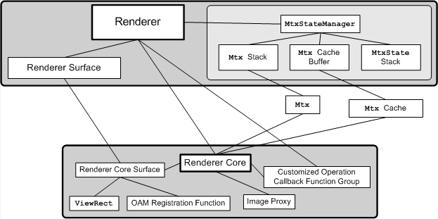
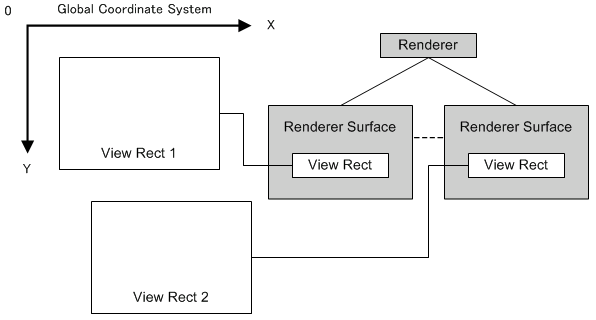

Renderer Overview
Conceptual Diagram

Description
The renderer provides APIs for rendering game characters on the screen. The renderer module can be roughly divided into the renderer core module and renderer module. The renderer core module oversees render processing for the renderer module and operates as a subcontractor module for the renderer module. It is also possible for the user to directly use the renderer core module. The renderer module has an internal matrix stack and manages the affine conversion operations for the render targets. It also performs the affine parameter setting for the two 2D graphics engines. The renderer has a number of render surfaces. These render surfaces contain the rectangular regions which define the areas on screen where display may occur, and information concerning the APIs that render those regions. By configuring the render surface appropriately, rendering can be done with the same APIs regardless of whether a character uses the main screen OAM, sub-screen OAM, or software sprite.
Render Surface and Virtual Screen

The renderer treats the game character as an object placed on one large, virtual screen. A number of rectangular areas on this virtual screen are set up in the various render surfaces of the renderer. These areas may be located anywhere. If a game character enters one of these rectangular areas, the character is displayed on the screen.
Render Surface and Rendering API
If the game character enters one of the rectangular areas set up in one of the render surfaces, it is rendered on the screen. The render surface itself holds the information describing how the game character will be rendered. Based on this information, the game character is rendered either by the main screen OAM, sub-screen OAM, or software sprite.
Renderer Matrix Stack
The renderer has an internal matrix stack. For a general description of the matrix stack, refer to appropriate technical references.
The renderer operates with the goal of keeping the affine parameter consumption of the 2D graphics engine to a minimum.
The basic rules are listed below.
- There is a maximum of 32 types of single affine parameters that can be used inside a single BeginRendering() — EndRendering() unit. If there are more, they must be divided between multiple renderings. If the types of affine parameters exceed 32, a proper rendering result will not be obtained.
- Translation operations do not use up new affine parameters.
- When scale or rotation operations are carried out, the current matrix change flag is turned ON.
- If rendering registration occurs when the current matrix change flag is turned ON, the current matrix is read into the affine parameters. At this time, one new affine parameter is used up.
- If operations that cancel each other out are performed (for example, a reverse rotation added to a rotation), the current matrix change flag is not reset even though the rotation conversion component becomes zero.
(See Also: Renderer Matrix State)
See Also
None.
Revision History
2004/12/06 Initial version.
CONFIDENTIAL